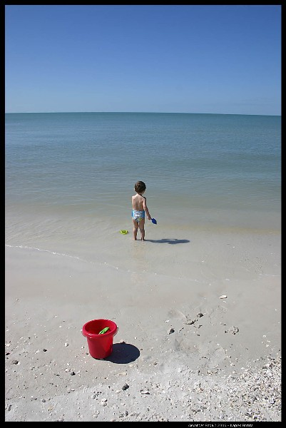
You showed up, and it has been a joy ever since.
I have been going through photographs this week — tens of thousands of them, scattered across drives and old phones and libraries nobody had opened in years. There is the log flume in 2017: you soaked straight through, next to Herman, both of you laughing. I love your expression in the photo. That was a good time. Sorry about the rollercoasters.
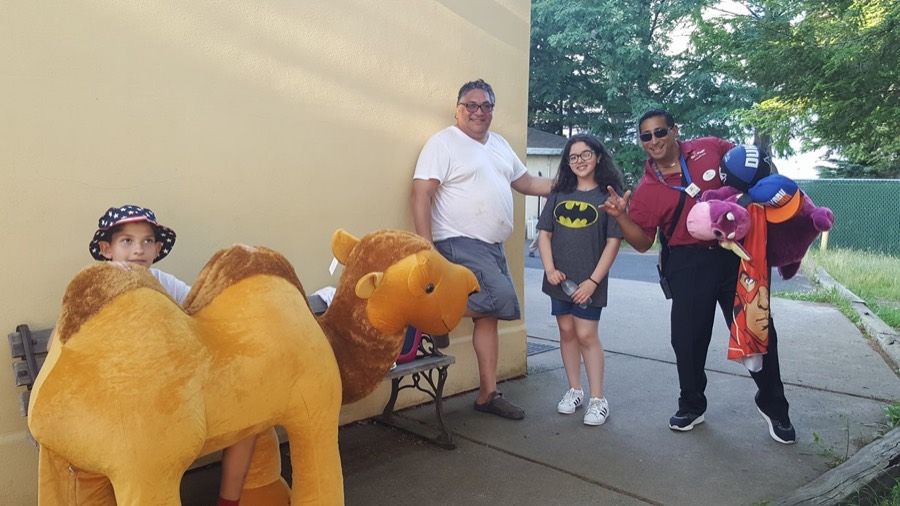
And the basketball booth on the midway at Great Adventure, you cleared the shelf. You walked away with the camel, the lion and whatever else would fit under an arm, and the man running the stand finally told me to get you out of there — you were costing him too much money.
Everyone warns you that they grow up. Nobody mentions that if you are lucky, they turn into your favorite person and most treasured thing in the world.
Happy birthday, Sebastian. We love you — all of it.
— Mom and Dad · 26 September 2026
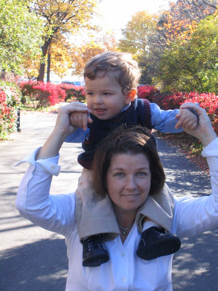
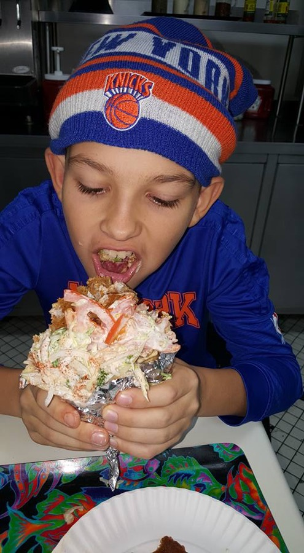
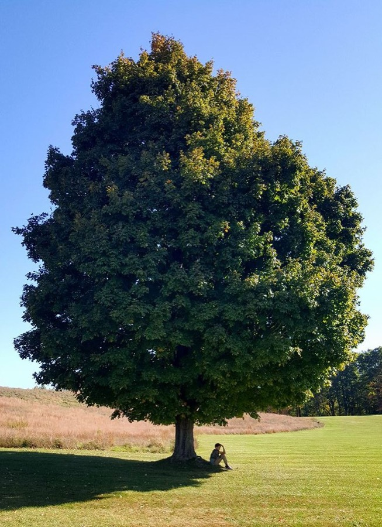
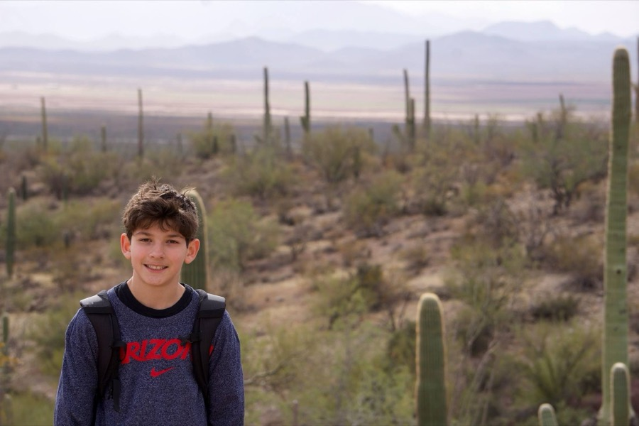
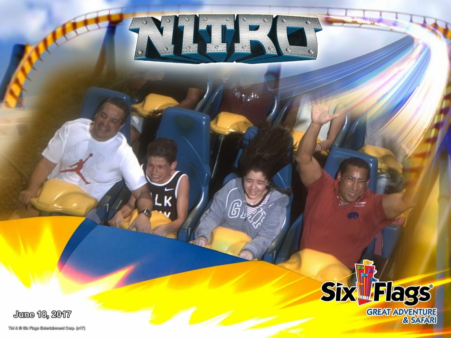
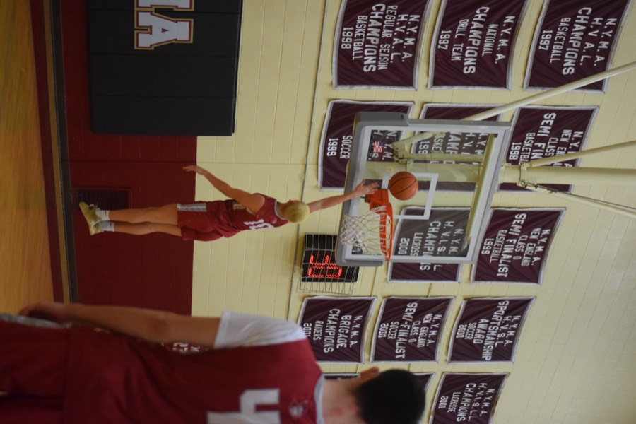
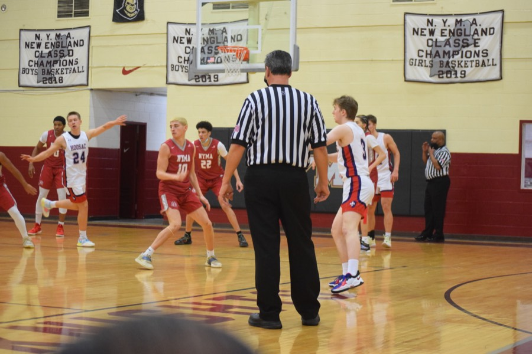
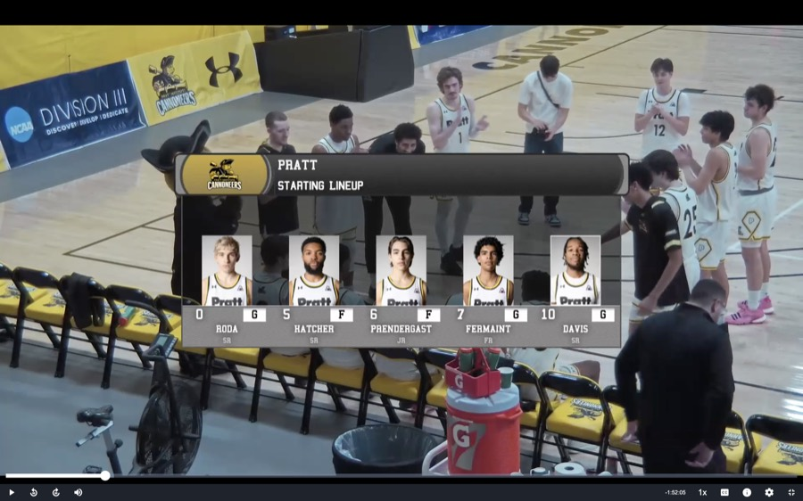
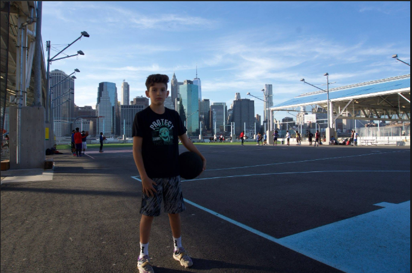
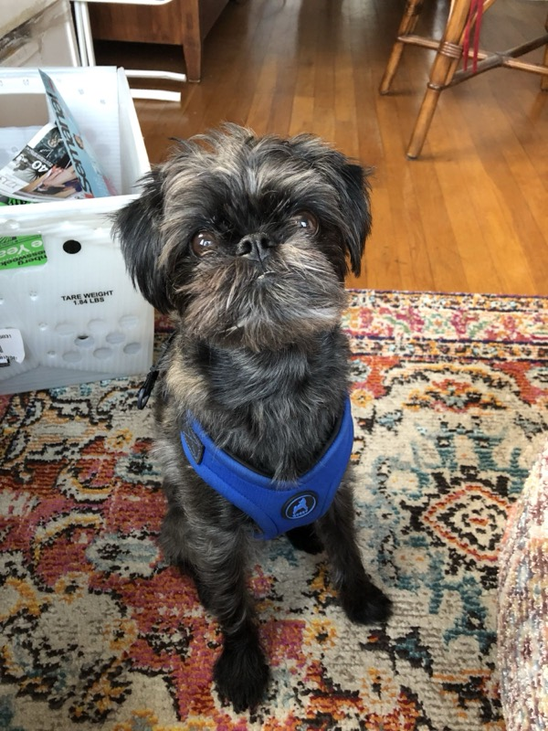
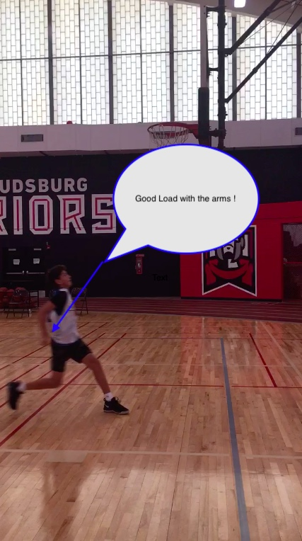
1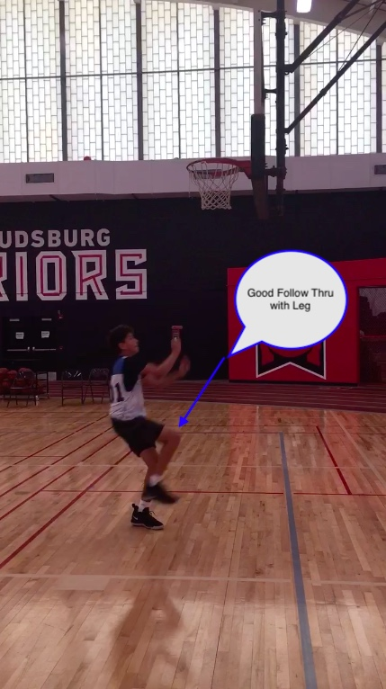
2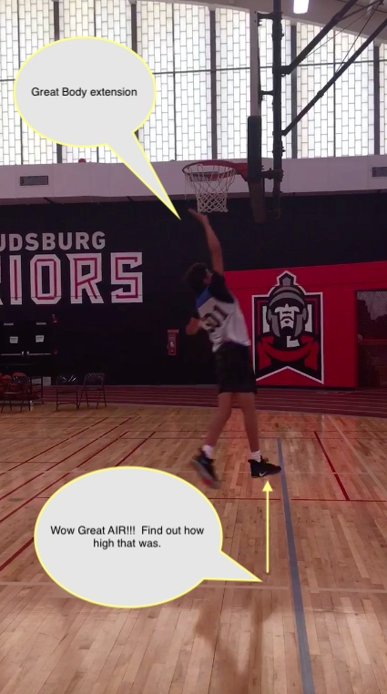
3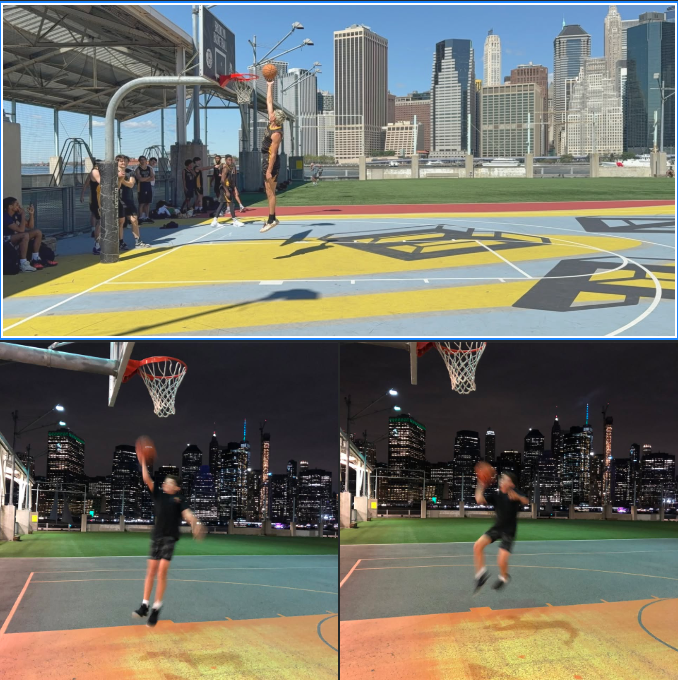